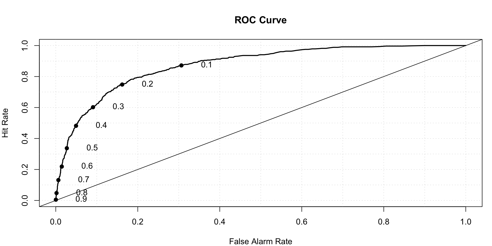
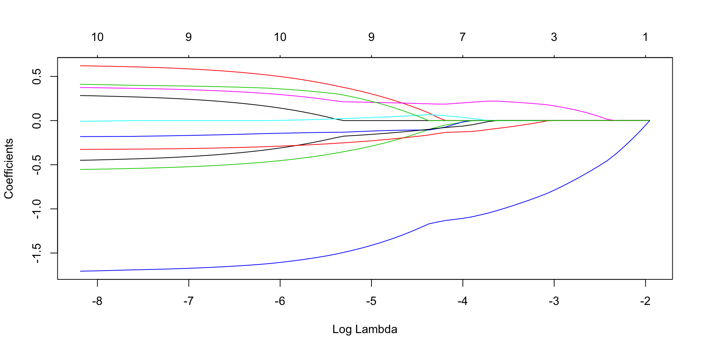
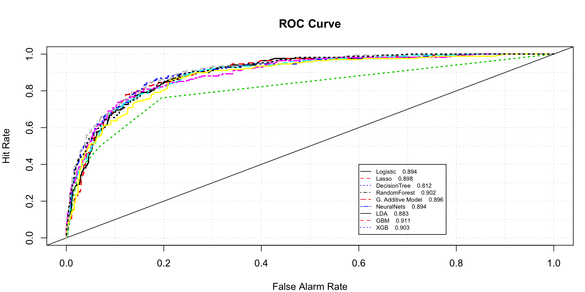

Machine Learning algorithm benchmarking
Swapnil
Comparative study of machine learning aglorithms for a binary classfication problem
The purpose of this project is to compare performance of top machine learning alorithms in solving binary classification problem. The data used for this project pertains to bankruptcy. The objective is to predict if an organization will go bankrupt or not. False possitive predictions are penalized 15 times False negative prediction.
Following are the alorithms that wil be considered for comparison :
- Logistic Regression
- Lasso Regression -L1 Norm Regularization
- Classification Tree
- RandomForest
- Generalized Additive Model
- Neural Nets
- Linear discriminant analysis
- Boosting Algorithms
Packages Required-
library(rpart)
library(caret)
library(tidyverse)
library(data.table)
library(GGally)
library(corrplot)
library(verification)
library(ROCR)
library(maptree)
library(glmnet)
library(gridExtra)
library(randomForest)
library(mgcv)
library(nnet)
library(pROC)
library(gbm)
library(e1071)
library(xgboost)
library(DT)
library(NeuralNetTools)
library(rpart.plot)Getting the sense of the data
setwd("~/Study/MS-Bana/DM 2/Case Study 1")
bankruptcy<-fread('bankruptcy.csv')
colSums(is.na(bankruptcy))## FYEAR DLRSN CUSIP R1 R2 R3 R4 R5 R6 R7 R8 R9
## 0 0 0 0 0 0 0 0 0 0 0 0
## R10
## 0str(bankruptcy)## Classes 'data.table' and 'data.frame': 5436 obs. of 13 variables:
## $ FYEAR: int 1999 1999 1999 1994 1999 1999 1999 1999 1987 1999 ...
## $ DLRSN: int 0 0 0 1 0 0 0 0 1 0 ...
## $ CUSIP: chr "00036020" "00036110" "00037520" "00078110" ...
## $ R1 : num 0.307 0.761 -0.514 -0.466 2.023 ...
## $ R2 : num 0.887 0.592 0.338 0.371 0.215 ...
## $ R3 : num 1.648 0.453 0.299 0.496 0.183 ...
## $ R4 : num -0.1992 -0.3699 -0.0291 -0.3734 6.6954 ...
## $ R5 : num 1.093 0.186 -0.433 -0.267 -1.148 ...
## $ R6 : num -0.3133 0.0396 0.83 0.9778 -1.5059 ...
## $ R7 : num -0.197 0.327 -0.708 -0.611 2.876 ...
## $ R8 : num 1.207 0.428 0.476 0.457 0.287 ...
## $ R9 : num 0.282 1.107 2.179 0.152 -0.986 ...
## $ R10 : num 0.1589 0.7934 2.4846 0.0478 0.7911 ...
## - attr(*, ".internal.selfref")=<externalptr>datatable(head(bankruptcy))We change DLRSN, which is the dependent variable, to factor
bankruptcy$DLRSN<-as.factor(bankruptcy$DLRSN)
summary(bankruptcy)## FYEAR DLRSN CUSIP R1
## Min. :1980 0:4660 Length:5436 Min. :-4.3828
## 1st Qu.:1999 1: 776 Class :character 1st Qu.:-0.7501
## Median :1999 Mode :character Median :-0.2220
## Mean :1998 Mean :-0.2352
## 3rd Qu.:1999 3rd Qu.: 0.4821
## Max. :1999 Max. : 2.0234
## R2 R3 R4 R5
## Min. :-2.2418 Min. :-2.06423 Min. :-0.42712 Min. :-1.3639
## 1st Qu.:-1.0805 1st Qu.:-1.07887 1st Qu.:-0.38752 1st Qu.:-0.8748
## Median : 0.1337 Median : 0.06858 Median :-0.30754 Median :-0.3508
## Mean :-0.2915 Mean :-0.24411 Mean : 0.23903 Mean :-0.1338
## 3rd Qu.: 0.5103 3rd Qu.: 0.50070 3rd Qu.: 0.02746 3rd Qu.: 0.2878
## Max. : 1.4854 Max. : 2.14246 Max. : 6.69536 Max. : 4.0362
## R6 R7 R8
## Min. :-1.505889 Min. :-1.23340 Min. :-2.2082
## 1st Qu.:-0.656827 1st Qu.:-0.77996 1st Qu.:-1.0054
## Median : 0.003493 Median :-0.43205 Median : 0.2053
## Mean : 0.195707 Mean :-0.09612 Mean :-0.2272
## 3rd Qu.: 0.608376 3rd Qu.: 0.17578 3rd Qu.: 0.5289
## Max. : 5.110424 Max. : 2.87648 Max. : 2.0006
## R9 R10
## Min. :-2.76356 Min. :-2.2140
## 1st Qu.:-0.66606 1st Qu.:-0.6413
## Median : 0.06219 Median : 0.1230
## Mean : 0.02538 Mean : 0.1806
## 3rd Qu.: 0.81215 3rd Qu.: 0.9878
## Max. : 2.17918 Max. : 2.4846Checking CUSIP- CUSIP Uniquely identifies each row, we drop the CUSIP column and use it as rownames
sum(duplicated(bankruptcy$CUSIP))## [1] 0rownames(bankruptcy)<-bankruptcy$CUSIP
bankruptcy$CUSIP<-NULLDividing test and train dataset
set.seed(222)
indexes<-sample(nrow(bankruptcy),0.8*nrow(bankruptcy),replace = F)
train<-bankruptcy[indexes,]
test<-bankruptcy[-indexes,]
dim(train)## [1] 4348 12dim(test)## [1] 1088 12Exploratory data analysis-
summary(train)## FYEAR DLRSN R1 R2
## Min. :1980 0:3740 Min. :-4.3828 Min. :-2.2418
## 1st Qu.:1999 1: 608 1st Qu.:-0.7524 1st Qu.:-1.1229
## Median :1999 Median :-0.2160 Median : 0.1314
## Mean :1998 Mean :-0.2396 Mean :-0.2979
## 3rd Qu.:1999 3rd Qu.: 0.4894 3rd Qu.: 0.5103
## Max. :1999 Max. : 2.0234 Max. : 1.4854
## R3 R4 R5
## Min. :-2.06423 Min. :-0.42712 Min. :-1.3639
## 1st Qu.:-1.07777 1st Qu.:-0.38660 1st Qu.:-0.8763
## Median : 0.07217 Median :-0.30662 Median :-0.3454
## Mean :-0.24211 Mean : 0.24552 Mean :-0.1338
## 3rd Qu.: 0.50130 3rd Qu.: 0.02556 3rd Qu.: 0.2907
## Max. : 2.14246 Max. : 6.69536 Max. : 4.0362
## R6 R7 R8 R9
## Min. :-1.50589 Min. :-1.2334 Min. :-2.2082 Min. :-2.76356
## 1st Qu.:-0.66619 1st Qu.:-0.7813 1st Qu.:-1.0332 1st Qu.:-0.66436
## Median : 0.00168 Median :-0.4311 Median : 0.2014 Median : 0.05877
## Mean : 0.20447 Mean :-0.0943 Mean :-0.2345 Mean : 0.02148
## 3rd Qu.: 0.60984 3rd Qu.: 0.1739 3rd Qu.: 0.5286 3rd Qu.: 0.80647
## Max. : 5.11042 Max. : 2.8765 Max. : 2.0006 Max. : 2.17918
## R10
## Min. :-2.2140
## 1st Qu.:-0.6347
## Median : 0.1249
## Mean : 0.1845
## 3rd Qu.: 0.9884
## Max. : 2.4846cormat<-cor(train[,-'DLRSN'])
corrplot(cormat,method='number')Strong correlation between R6 and R1, R8 and R3– We need to take this into consideration while building models
cor.test(train$R1,train$R6)##
## Pearson's product-moment correlation
##
## data: train$R1 and train$R6
## t = -72.753, df = 4346, p-value < 2.2e-16
## alternative hypothesis: true correlation is not equal to 0
## 95 percent confidence interval:
## -0.7541402 -0.7273222
## sample estimates:
## cor
## -0.7410266cor.test(train$R3,train$R8)##
## Pearson's product-moment correlation
##
## data: train$R3 and train$R8
## t = 127.11, df = 4346, p-value < 2.2e-16
## alternative hypothesis: true correlation is not equal to 0
## 95 percent confidence interval:
## 0.8812344 0.8938453
## sample estimates:
## cor
## 0.8877062p1<-ggplot(data = train,aes(R3,R8,col=DLRSN))+geom_point(alpha=0.5)
p2<-ggplot(data = train,aes(R1,R6,col=DLRSN))+geom_point(alpha=0.5)
grid.arrange(p1,p2)Now we plot each feature against DLRSN
p1<-ggplot(data = train,aes(x = DLRSN,y = R1,fill=DLRSN))+geom_boxplot()
p2<-ggplot(data = train,aes(x = DLRSN,y = R2,fill=DLRSN))+geom_boxplot()
p3<-ggplot(data = train,aes(x = DLRSN,y = R3,fill=DLRSN))+geom_boxplot()
p4<-ggplot(data = train,aes(x = DLRSN,y = R4,fill=DLRSN))+geom_boxplot()
p5<-ggplot(data = train,aes(x = DLRSN,y = R5,fill=DLRSN))+geom_boxplot()
p6<-ggplot(data = train,aes(x = DLRSN,y = R6,fill=DLRSN))+geom_boxplot()
p7<-ggplot(data = train,aes(x = DLRSN,y = R7,fill=DLRSN))+geom_boxplot()
p8<-ggplot(data = train,aes(x = DLRSN,y = R8,fill=DLRSN))+geom_boxplot()
p9<-ggplot(data = train,aes(x = DLRSN,y = R9,fill=DLRSN))+geom_boxplot()
p10<-ggplot(data = train,aes(x = DLRSN,y = R10,fill=DLRSN))+geom_boxplot()
p11<-ggplot(data = train,aes(x = DLRSN,y = FYEAR,fill=DLRSN))+geom_boxplot()
grid.arrange(p1,p2,p3,p4,p5,p6,nrow=3)
grid.arrange(p7,p8,p9,p10,p11,nrow=3)rm(p1,p2,p3,p4,p5,p6,p7,p8,p9,p10,p11)It can be seen that all the values of DLRSN in the year 1999 were 0.
table(train$FYEAR,train$DLRSN) ##
## 0 1
## 1980 0 18
## 1981 0 31
## 1982 0 14
## 1983 0 31
## 1984 0 44
## 1985 0 34
## 1986 0 39
## 1987 0 34
## 1988 0 39
## 1989 0 53
## 1990 0 60
## 1991 0 39
## 1992 0 27
## 1993 0 27
## 1994 0 25
## 1995 0 35
## 1996 0 36
## 1997 0 21
## 1998 0 1
## 1999 3740 0This is an intersting find, let’s not use YEAR for the prediction. For the prediction, we define the cost function as we assign the cost of 15 when a bad observation is predicted as good and weight 1, when a good obesrvation is predicted as bad. We also define another cost function to get area under the ROC curve.
## Cost function
cost1 <- function(actual, predicted) {
weight1 = 15
weight0 = 1
c1 = (actual == 1) & (predicted < cutoff) #logical vector - true if actual bad but predicted good
c0 = (actual == 0) & (predicted > cutoff) #logical vecotr - true if actual good but predicted bad
return(mean(weight1 * c1 + weight0 * c0))
}
## Area under the ROC Curve used as cost function. We will need this later
## Cost function
cost2 <- function(actual, predicted) {
return(auc(roc(actual,predicted))[1])
}
## Prob thresholds to be used for ROC Curve
thresh<-seq(0,1,0.001)Modeling
Logistic Regression-
full.log.probit<-glm(data = train,DLRSN~.,family = binomial(link=probit))## Warning: glm.fit: algorithm did not converge## Warning: glm.fit: fitted probabilities numerically 0 or 1 occurredWe get error because of the fact that all values of DLRSN are 0 for the year 1999. We need to remove YEAR.
full.log.probit<-glm(data = train[,-'FYEAR'],DLRSN~.,family = binomial(link=probit))
summary(full.log.probit)##
## Call:
## glm(formula = DLRSN ~ ., family = binomial(link = probit), data = train[,
## -"FYEAR"])
##
## Deviance Residuals:
## Min 1Q Median 3Q Max
## -2.2349 -0.4801 -0.2327 -0.0762 3.4715
##
## Coefficients:
## Estimate Std. Error z value Pr(>|z|)
## (Intercept) -1.412044 0.037421 -37.734 < 2e-16 ***
## R1 0.122991 0.041286 2.979 0.002892 **
## R2 0.308690 0.043588 7.082 1.42e-12 ***
## R3 -0.266177 0.055855 -4.765 1.88e-06 ***
## R4 -0.031184 0.047528 -0.656 0.511746
## R5 -0.007465 0.030691 -0.243 0.807823
## R6 0.179008 0.031271 5.724 1.04e-08 ***
## R7 -0.195039 0.052671 -3.703 0.000213 ***
## R8 -0.141398 0.048756 -2.900 0.003731 **
## R9 0.198532 0.058369 3.401 0.000671 ***
## R10 -0.837702 0.053462 -15.669 < 2e-16 ***
## ---
## Signif. codes: 0 '***' 0.001 '**' 0.01 '*' 0.05 '.' 0.1 ' ' 1
##
## (Dispersion parameter for binomial family taken to be 1)
##
## Null deviance: 3518.9 on 4347 degrees of freedom
## Residual deviance: 2411.6 on 4337 degrees of freedom
## AIC: 2433.6
##
## Number of Fisher Scoring iterations: 7full.log.probit.prediction<-predict(full.log.probit,type = "response")
roc.plot(x = train$DLRSN == "1", pred = full.log.probit.prediction,thresholds = thresh)$roc.vol
## Model Area p.value binorm.area
## 1 Model 1 0.87412 2.704709e-193 NAWe can see that r4 and r5 are not significant.
Lasso Variable selection- We need to select variables that are most important
## We need to standardize all the variables before we can go for LASSO variable selection
X<-scale(train[,-c('DLRSN','FYEAR')])
X<-as.matrix(X)
Y<- as.matrix(train[,'DLRSN'])
lasso.fit<- glmnet(x=X, y=Y, family = "binomial", alpha = 1)
plot(lasso.fit, xvar = "lambda") We need to decide optimum value of lambda using Cross Validation, we go for 10 fold cross validation.
cv.lasso<- cv.glmnet(x=X, y=Y,family = "binomial", alpha = 1, nfolds = 10)
plot(cv.lasso)In the above graph, the left vertical line is the value of lambda that gives gives smallest cross-validation error and the right is the value of lambda with CV error within 1 standard deviation of smallest CV error.
cv.lasso$lambda.min## [1] 0.0005856352cv.lasso$lambda.1se## [1] 0.007923925## we decide to go for lambda=0.007923925
# Checking the coefficients
coef(lasso.fit, s=cv.lasso$lambda.1se)## 11 x 1 sparse Matrix of class "dgCMatrix"
## 1
## (Intercept) -2.51005378
## R1 .
## R2 0.25541472
## R3 -0.24865520
## R4 -0.11304099
## R5 0.04130583
## R6 0.20290115
## R7 -0.14357340
## R8 -0.21434882
## R9 0.17226666
## R10 -1.36080668coef(lasso.fit, s=cv.lasso$lambda.mi)## 11 x 1 sparse Matrix of class "dgCMatrix"
## 1
## (Intercept) -2.7683553
## R1 0.2622309
## R2 0.6035406
## R3 -0.5378433
## R4 -0.1764557
## R5 .
## R6 0.3612399
## R7 -0.4283044
## R8 -0.3217076
## R9 0.3973100
## R10 -1.6863493## Predictions using, s=cv.lasso$lambda.1se
pred.lasso<- predict(lasso.fit, newx = X, s=cv.lasso$lambda.1se,type = 'response')
roc.plot(x = train$DLRSN == "1", pred = pred.lasso,thresholds = thresh)$roc.vol## Model Area p.value binorm.area
## 1 Model 1 0.8716762 8.28191e-191 NAClassification Tree- Now we try to fill the classification tree for the data.
full.rpart<-rpart(data = train[,-'FYEAR'],DLRSN~.,method = 'class')
rpart.plot(full.rpart)plotcp(full.rpart)printcp(full.rpart)##
## Classification tree:
## rpart(formula = DLRSN ~ ., data = train[, -"FYEAR"], method = "class")
##
## Variables actually used in tree construction:
## [1] R10 R2 R3 R4 R5 R6
##
## Root node error: 608/4348 = 0.13983
##
## n= 4348
##
## CP nsplit rel error xerror xstd
## 1 0.050987 0 1.00000 1.00000 0.037613
## 2 0.037829 3 0.84704 0.91283 0.036190
## 3 0.021382 4 0.80921 0.88487 0.035711
## 4 0.011513 6 0.76645 0.86184 0.035308
## 5 0.010000 8 0.74342 0.83717 0.034867rpart.prediction<-predict(full.rpart,type = 'prob')
roc.plot(x = train$DLRSN == "1", pred = rpart.prediction[,2],thresholds = thresh)$roc.vol## Model Area p.value binorm.area
## 1 Model 1 0.8018075 4.722865e-201 NARandom Forest
full.randomForest<-randomForest(data=train[,-'FYEAR'],DLRSN~.,ntree=1000)
plot(full.randomForest)rf.predicted<-predict(full.randomForest,type = 'prob')
roc.plot(x = train$DLRSN == "1", pred = rf.predicted[,2],thresholds = thresh)$roc.vol## Model Area p.value binorm.area
## 1 Model 1 0.8910791 2.070555e-211 NAGAM- Generalized additive model
full.gam<-gam(data=train,DLRSN~s(R1)+s(R2)+s(R3)+s(R4)+s(R5)+s(R6)+s(R7)+s(R8)+
s(R9)+s(R10),family = 'binomial')
summary(full.gam)##
## Family: binomial
## Link function: logit
##
## Formula:
## DLRSN ~ s(R1) + s(R2) + s(R3) + s(R4) + s(R5) + s(R6) + s(R7) +
## s(R8) + s(R9) + s(R10)
##
## Parametric coefficients:
## Estimate Std. Error z value Pr(>|z|)
## (Intercept) -3.0685 0.1188 -25.83 <2e-16 ***
## ---
## Signif. codes: 0 '***' 0.001 '**' 0.01 '*' 0.05 '.' 0.1 ' ' 1
##
## Approximate significance of smooth terms:
## edf Ref.df Chi.sq p-value
## s(R1) 1.000 1.000 2.571 0.10892
## s(R2) 4.495 5.500 85.568 3.24e-16 ***
## s(R3) 1.663 2.090 13.833 0.00115 **
## s(R4) 1.001 1.002 1.505 0.22009
## s(R5) 3.378 4.187 5.411 0.25938
## s(R6) 4.191 5.167 87.903 < 2e-16 ***
## s(R7) 1.262 1.474 0.557 0.54776
## s(R8) 5.383 6.452 60.143 1.11e-10 ***
## s(R9) 2.904 3.680 23.760 7.52e-05 ***
## s(R10) 2.141 2.736 116.324 < 2e-16 ***
## ---
## Signif. codes: 0 '***' 0.001 '**' 0.01 '*' 0.05 '.' 0.1 ' ' 1
##
## R-sq.(adj) = 0.36 Deviance explained = 37.7%
## UBRE = -0.48289 Scale est. = 1 n = 4348full.gam.prediction<-predict(full.gam,type = 'response')We can remove smoothing for non significant features
gam.reduced<-gam(data=train,DLRSN~R1+s(R2)+s(R3)+s(R6)+R7+s(R8)+
s(R9)+s(R10),family = 'binomial')
summary(gam.reduced)##
## Family: binomial
## Link function: logit
##
## Formula:
## DLRSN ~ R1 + s(R2) + s(R3) + s(R6) + R7 + s(R8) + s(R9) + s(R10)
##
## Parametric coefficients:
## Estimate Std. Error z value Pr(>|z|)
## (Intercept) -3.02593 0.11597 -26.091 <2e-16 ***
## R1 0.12476 0.07695 1.621 0.105
## R7 -0.10763 0.12210 -0.881 0.378
## ---
## Signif. codes: 0 '***' 0.001 '**' 0.01 '*' 0.05 '.' 0.1 ' ' 1
##
## Approximate significance of smooth terms:
## edf Ref.df Chi.sq p-value
## s(R2) 4.669 5.698 88.93 < 2e-16 ***
## s(R3) 1.900 2.407 14.82 0.00112 **
## s(R6) 4.302 5.302 95.32 < 2e-16 ***
## s(R8) 5.448 6.520 60.50 1.05e-10 ***
## s(R9) 2.722 3.455 24.71 3.67e-05 ***
## s(R10) 2.145 2.737 193.41 < 2e-16 ***
## ---
## Signif. codes: 0 '***' 0.001 '**' 0.01 '*' 0.05 '.' 0.1 ' ' 1
##
## R-sq.(adj) = 0.358 Deviance explained = 37.5%
## UBRE = -0.48268 Scale est. = 1 n = 4348gam.reduced.prediction<-predict(gam.reduced,type = 'response')Comparing AUC for both
roc.plot(x = train$DLRSN=="1",pred = cbind(full.gam.prediction,gam.reduced.prediction),thresholds = thresh,
legend = TRUE,leg.text = c("Full GAM","Reduced GAM"))$roc.vol## Model Area p.value binorm.area
## 1 Model 1 0.8988672 2.196498e-219 NA
## 2 Model 2 0.8979304 2.288964e-218 NAWe can see, they have almost same ROC.
Neural Networks- for Neural Nets, we need to standardise all numeric variables
train.std<-train
for (i in 3:12)
{
train.std[,i]<-scale(train.std[,..i])
}
summary(train.std)## FYEAR DLRSN R1 R2
## Min. :1980 0:3740 Min. :-3.41589 Min. :-1.7146
## 1st Qu.:1999 1: 608 1st Qu.:-0.42277 1st Qu.:-0.7277
## Median :1999 Median : 0.01942 Median : 0.3787
## Mean :1998 Mean : 0.00000 Mean : 0.0000
## 3rd Qu.:1999 3rd Qu.: 0.60098 3rd Qu.: 0.7129
## Max. :1999 Max. : 1.86574 Max. : 1.5730
## R3 R4 R5 R6
## Min. :-1.6491 Min. :-0.4510 Min. :-1.1879 Min. :-1.2966
## 1st Qu.:-0.7563 1st Qu.:-0.4239 1st Qu.:-0.7170 1st Qu.:-0.6600
## Median : 0.2844 Median :-0.3702 Median :-0.2044 Median :-0.1537
## Mean : 0.0000 Mean : 0.0000 Mean : 0.0000 Mean : 0.0000
## 3rd Qu.: 0.6728 3rd Qu.:-0.1475 3rd Qu.: 0.4099 3rd Qu.: 0.3073
## Max. : 2.1581 Max. : 4.3249 Max. : 4.0270 Max. : 3.7191
## R7 R8 R9 R10
## Min. :-1.0823 Min. :-1.7086 Min. :-2.53649 Min. :-2.12636
## 1st Qu.:-0.6527 1st Qu.:-0.6914 1st Qu.:-0.62463 1st Qu.:-0.72624
## Median :-0.3200 Median : 0.3774 Median : 0.03397 Median :-0.05285
## Mean : 0.0000 Mean : 0.0000 Mean : 0.00000 Mean : 0.00000
## 3rd Qu.: 0.2548 3rd Qu.: 0.6606 3rd Qu.: 0.71494 3rd Qu.: 0.71272
## Max. : 2.8226 Max. : 1.9350 Max. : 1.96514 Max. : 2.03919Tunning Neural Net For neural nets, we have tunning paramets such as number of hidden layers and weight decay- For now, we just consider the training data for cross validation, 5 fold cross validation.
avgTrainROC<-NULL
avgTestROC<-NULL
for ( j in 1:10 )
{
trainRoc<-NULL
testRoc<-NULL
for ( i in 1:5)
{
set.seed(22*i)
flags<-sample(nrow(train.std),0.8*nrow(train.std),replace = F)
nnet.train<-train.std[flags,]
nnet.test<-train.std[-flags,]
model<-nnet(data=nnet.train[,-c('FYEAR')],DLRSN~.,size=j,lineout=F,decay=0,maxit=10000)
train.pred<-predict(model)
test.pred<-predict(model,nnet.test)
trainRoc[i]<-cost2(nnet.train$DLRSN,as.numeric(train.pred))
testRoc[i]<-cost2(nnet.test$DLRSN,as.numeric(test.pred))
}
avgTrainROC[j]<-mean(trainRoc)
avgTestROC[j]<-mean(testRoc)
}
ggplot(data = NULL,aes(x = 1:10,y = avgTrainROC,col='Train'))+geom_line()+
geom_line(aes(y=avgTestROC,col='Test'))+labs(x="Hidden Layers",y='Average AUC')+
scale_x_continuous(limits = c(1,10),breaks =seq(1,10,1) )h<-which(avgTestROC==max(avgTestROC))As we can see, the AUC for train keeps increasing as we add more hidden layers but the test AUC starts decreasing after 8 th layer. So we finalize 8 hidden layers.
Now, we need to decide, weight decay,
avgTrainROC<-NULL
avgTestROC<-NULL
d<-NULL
for ( j in 1:30 )
{
trainRoc<-NULL
testRoc<-NULL
wt<-j/1000
d[j]<-wt
for ( i in 1:5)
{
set.seed(22*i)
flags<-sample(nrow(train.std),0.8*nrow(train.std),replace = F)
nnet.train<-train.std[flags,]
nnet.test<-train.std[-flags,]
model<-nnet(data=nnet.train[,-c('FYEAR')],DLRSN~.,size=h,lineout=F,decay=wt,maxit=10000)
train.pred<-predict(model)
test.pred<-predict(model,nnet.test)
trainRoc[i]<-cost2(nnet.train$DLRSN,as.numeric(train.pred))
testRoc[i]<-cost2(nnet.test$DLRSN,as.numeric(test.pred))
}
avgTrainROC[j]<-mean(trainRoc)
avgTestROC[j]<-mean(testRoc)
}
ggplot(data = NULL,aes(x = d,y = avgTrainROC,col='Train'))+geom_line()+
geom_line(aes(y=avgTestROC,col='Test'))+labs(x="Weight Decay",y='Average AUC')+
scale_x_continuous(limits = c(0,0.03),breaks =seq(0,0.03,0.005) )## Finding out value of weight decay for which test error was minimum
d[which(avgTestROC==max(avgTestROC))]
dcay<-d[which(avgTestROC==max(avgTestROC))]We decide to build model with wight decay=0.027 and number of hiddne layers=3
nnet.model<-nnet(data=train[,-'FYEAR'],DLRSN~.,size=3,decay=dcay,lineout=F,maxit=10000)## # weights: 37
## initial value 2356.022224
## iter 10 value 1243.005101
## iter 20 value 1161.216188
## iter 30 value 1154.705631
## iter 40 value 1138.136049
## iter 50 value 1122.923523
## iter 60 value 1102.322335
## iter 70 value 1082.141447
## iter 80 value 1076.637268
## iter 90 value 1074.841966
## iter 100 value 1069.083018
## iter 110 value 1058.902304
## iter 120 value 1057.307336
## iter 130 value 1056.689693
## iter 140 value 1056.601707
## final value 1056.601408
## convergednnet.prediction<-predict(nnet.model)
roc.plot(x=train$DLRSN=="1",pred=nnet.prediction,thresholds = thresh)$roc.vol## Model Area p.value binorm.area
## 1 Model 1 0.9093794 5.680755e-231 NAStructure of NeuralNet
plotnet(nnet.model)Linear Discriminant Analysis
model.lda<-lda(data=train[,-'FYEAR'],DLRSN~.)
lda.predicted<-predict(model.lda)$posterior[,2]
roc.plot(x=train$DLRSN=="1",pred=lda.predicted,thresholds = thresh)$roc.vol## Model Area p.value binorm.area
## 1 Model 1 0.8649931 4.302628e-184 NABoosting algorithms-
- GBM- Gradient Boosting Machine We need to tune depth of trees for better prediction and avoiding overfitting. We go for a 5 fold cross validation.
avgAUC<-NULL
for (i in 2:9)
{
model<-gbm(data=train[,-'FYEAR'],as.character(DLRSN)~.,distribution = "bernoulli",n.trees = 5000,
interaction.depth = i,cv.folds = 5)
model.prediction<-predict(model,newdata = train[,-'FYEAR'],n.trees = 5000,type = 'response')
avgAUC[i]<-cost2(train$DLRSN,model.prediction)
}
ggplot(data = NULL,aes(x = 2:9,y = avgAUC[2:9]))+geom_line()gbm.model<-gbm(data=train[,-'FYEAR'],as.character(DLRSN)~.,distribution = "bernoulli",n.trees = 5000,
interaction.depth = 8)
gbm.model.prediction<-predict(gbm.model,newdata = train[,-'FYEAR'],n.trees = 5000,type = 'response')
roc.plot(x=train$DLRSN=="1",pred=gbm.model.prediction,thresholds = thresh)$roc.vol## Model Area p.value binorm.area
## 1 Model 1 0.9372375 3.911126e-263 NANow we check the performance of test data
gbm.test.prediction<-predict(gbm.model,newdata = test[,-'FYEAR'],n.trees = 5000,type = 'response')
roc.plot(x=test$DLRSN=="1",pred=gbm.test.prediction,thresholds = thresh)$roc.vol## Model Area p.value binorm.area
## 1 Model 1 0.9113742 6.08541e-65 NAXGBoost- eXtreme Gradient Boosting
We need to create matrix for test and train. On-hot encoding is not required as there are no important factors We will not touch test data assuming we are working on real world problem. For tunning, we divide training dataset into two parts, xtrain and xtest.
set.seed(100)
flag<-sample(nrow(train),0.8*nrow(train),replace = F)
xtrain<-train[flag,]
xtest<-train[-flag,]
train_mat<-sparse.model.matrix(data = xtrain[,-'FYEAR'],DLRSN~.-1)
head(train_mat)
test_mat<-sparse.model.matrix(data = xtest[,-'FYEAR'],DLRSN~.-1)
head(test_mat)
train_label<-as.numeric(xtrain$DLRSN)-1
test_label<-as.numeric(xtest$DLRSN)-1
# We need to conver data to DMatrix form
train_dMatrix<-xgb.DMatrix(data = as.matrix(train_mat),label=train_label)
test_dMatrix<-xgb.DMatrix(data = as.matrix(test_mat),label=test_label)
## Modeling
params <- list("objective" = "reg:logistic",
"eval_metric" = "auc")
watchlist <- list(train = train_dMatrix, test = test_dMatrix)
# eXtreme Gradient Boosting Model
xgb_model <- xgb.train(params = params,
data = train_dMatrix,
nrounds = 2000,
watchlist = watchlist,
eta = 0.02,
max.depth = 4,
gamma = 0,
subsample = 1,
colsample_bytree = 1,
missing = NA,
seed = 222)
tunning<-as.data.frame(xgb_model$evaluation_log)
ggplot(data = NULL,aes(x = tunning$iter,y = tunning$train_auc,col='train'))+geom_line()+
geom_line(aes(y = tunning$test_auc,col='test'))
As we can see, test AUC decreases after some time. Optimum number of rounds are to be used for modeling-
rounds<-which(tunning$test_auc==max(tunning$test_auc))
xgb_model <- xgb.train(params = params,
data = train_dMatrix,
nrounds = rounds[1],
watchlist = watchlist,
eta = 0.02,
max.depth = 4,
gamma = 0,
subsample = 1,
colsample_bytree = 1,
missing = NA,
seed = 222)
### Training prediction-
train_matrix<-sparse.model.matrix(data = train[,-'FYEAR'],DLRSN~.-1)
train_label<-as.numeric(train$DLRSN)-1
train_matrix<-xgb.DMatrix(data = as.matrix(train_matrix),label=train_label)
xgb_prediction.train<-predict(xgb_model, newdata = train_matrix)
## Prediction on test data-
# creating test Matrix
test_matrix<-sparse.model.matrix(data = test[,-'FYEAR'],DLRSN~.-1)
test_label<-as.numeric(test$DLRSN)-1
test_matrix<-xgb.DMatrix(data = as.matrix(test_matrix),label=test_label)
xgb_prediction<-predict(xgb_model, newdata = test_matrix)
## AUC-
roc.plot(x = test$DLRSN=="1",pred = xgb_prediction,thresholds = thresh)$roc.volFeature Importance-
XGB also describes which features were most important. Feature importance
imp <- xgb.importance(colnames(train_dMatrix), model = xgb_model)
print(imp)## Feature Gain Cover Frequency
## 1: R10 0.38533472 0.26270735 0.13625192
## 2: R6 0.11673771 0.11774888 0.11121352
## 3: R4 0.09844553 0.13018128 0.12027650
## 4: R2 0.07942843 0.07034012 0.08617512
## 5: R3 0.07727496 0.08016070 0.09370200
## 6: R9 0.07176248 0.11970026 0.12304147
## 7: R8 0.06572374 0.10381741 0.11397849
## 8: R5 0.04052285 0.05197845 0.07265745
## 9: R1 0.03553723 0.03552643 0.07649770
## 10: R7 0.02923235 0.02783911 0.06620584xgb.plot.importance(imp)As we can see, R10 is the most important feature.
Comparing Performance of all models on training data
roc.plot(x=train$DLRSN=="1",pred=cbind(full.log.probit.prediction,pred.lasso,
rpart.prediction[,2],rf.predicted[,2],full.gam.prediction,nnet.prediction,
lda.predicted,gbm.model.prediction,xgb_prediction.train),legend = T,
leg.text = c("Logistic","Lasso","DecisionTree",
"RandomForest","G. Additive Model","NeuralNets","LDA",
"GBM","XGB"),thresholds = thresh,show.thres = FALSE)$roc.vol
## Model Area p.value binorm.area
## 1 Model 1 0.8741200 2.704709e-193 NA
## 2 Model 2 0.8716762 8.281910e-191 NA
## 3 Model 3 0.8018075 4.722865e-201 NA
## 4 Model 4 0.8910791 2.070555e-211 NA
## 5 Model 5 0.8988672 2.196498e-219 NA
## 6 Model 6 0.9093794 5.680755e-231 NA
## 7 Model 7 0.8649931 4.302628e-184 NA
## 8 Model 8 0.9372375 3.911126e-263 NA
## 9 Model 9 0.9575447 6.548363e-288 NAComparison of model AUC for test data
X<-scale(test[,-c('DLRSN','FYEAR')])
X<-as.matrix(X)
logit.test.pred<-predict(full.log.probit,test,type = 'response')
lasso.test.pred<-predict(lasso.fit, newx = X, s=cv.lasso$lambda.1se,type = 'response')
rpart.test.pred<-predict(full.rpart,test,type = 'prob')
rf.test.pred<-predict(full.randomForest,test,type = 'prob')[,2]
gam.test.pred<-predict(full.gam,test,type = 'response')
nnet.test.pred<-predict(nnet.model,test)
lda.test.pred<-predict(model.lda,test)$posterior[,2]
roc.plot(x=test$DLRSN=="1",pred=cbind(logit.test.pred,lasso.test.pred,
rpart.test.pred[,2],rf.test.pred,gam.test.pred,nnet.test.pred,
lda.test.pred,gbm.test.prediction,xgb_prediction),legend = T,
leg.text = c("Logistic","Lasso","DecisionTree",
"RandomForest","G. Additive Model","NeuralNets","LDA","GBM","XGB"),thresholds = thresh,show.thres = FALSE)$roc.vol
## Model Area p.value binorm.area
## 1 Model 1 0.8942223 8.180486e-60 NA
## 2 Model 2 0.8977614 7.453058e-61 NA
## 3 Model 3 0.8120406 1.168601e-59 NA
## 4 Model 4 0.9018795 4.240485e-62 NA
## 5 Model 5 0.8957751 2.866906e-60 NA
## 6 Model 6 0.8942417 8.074172e-60 NA
## 7 Model 7 0.8825699 1.875970e-56 NA
## 8 Model 8 0.9113742 6.085410e-65 NA
## 9 Model 9 0.9029050 2.206549e-62 NAmodels<-c('Logistic Reg',"Lasso Reg","DecisionTree","RandomForest","Additive Model","Neural Net","LDA","GBM","XGB")
TrainAuc<-c(cost2(train$DLRSN,as.numeric(full.log.probit.prediction)),cost2(train$DLRSN,as.numeric(pred.lasso)),
cost2(train$DLRSN,as.numeric(rpart.prediction[,2])),cost2(train$DLRSN,as.numeric(rf.predicted[,2])),
cost2(train$DLRSN,as.numeric(full.gam.prediction)),cost2(train$DLRSN,as.numeric(nnet.prediction)),
cost2(train$DLRSN,as.numeric(lda.predicted)),cost2(train$DLRSN,as.numeric(gbm.model.prediction)),
cost2(train$DLRSN,as.numeric(xgb_prediction.train)))
TestAuc<-c(cost2(test$DLRSN,as.numeric(logit.test.pred)),cost2(test$DLRSN,as.numeric(lasso.test.pred)),
cost2(test$DLRSN,as.numeric(rpart.test.pred[,2])),cost2(test$DLRSN,as.numeric(rf.test.pred)),
cost2(test$DLRSN,as.numeric(gam.test.pred)),cost2(test$DLRSN,as.numeric(nnet.test.pred)),
cost2(test$DLRSN,as.numeric(lda.test.pred)),cost2(test$DLRSN,as.numeric(gbm.test.prediction)),
cost2(test$DLRSN,as.numeric(xgb_prediction)))
results<-as.data.frame(cbind(models,TrainAuc,TestAuc))
results<-results%>%arrange(desc(TestAuc))
datatable(results)As we can see, GBM has the highest AUC for test data.
Defining optimum cutoff probability for minimizing the cost function-
probs<-seq(0,1,0.001)
cost<-NULL
for (i in 1:1000)
{
cutoff<-probs[i]
predicted<-ifelse(gbm.model.prediction>cutoff,1,0)
cost[i]<-cost1(train$DLRSN,predicted)
}
plot(1:1000,cost)cutoffProb<-probs[which(cost==min(cost))]
cutoffProb## [1] 0.085predicted<-ifelse(gbm.test.prediction>cutoffProb,1,0)
cm<-confusionMatrix(factor(predicted),test$DLRSN)
cm[2]## $table
## Reference
## Prediction 0 1
## 0 694 16
## 1 226 152cm[3]$overall[1]## Accuracy
## 0.7775735cost1(test$DLRSN,predicted)## [1] 0.4283088Note that the accuracy may not be high for the test set, however, the cost is lowest.
If we were to go for accuracy, we can define new cost function as-
cost3 <- function(actual, predicted) {
m<-mean(actual==predicted)
return(m)
}
### Defining optimum cutoff probability for minimizing the cost function-
probs<-seq(0,1,0.001)
cost<-NULL
for (i in 1:1000)
{
cutoff<-probs[i]
predicted<-ifelse(gbm.model.prediction>cutoff,1,0)
cost[i]<-cost3(train$DLRSN,predicted)
}
plot(1:1000,cost)cutoffProb<-probs[which(cost==max(cost))]
cutoffProb## [1] 0.421predicted<-ifelse(gbm.test.prediction>cutoffProb,1,0)
cm<-confusionMatrix(factor(predicted),test$DLRSN)
cm[2]## $table
## Reference
## Prediction 0 1
## 0 885 78
## 1 35 90cm[3]$overall[1]## Accuracy
## 0.8961397We have achieved almost 89% accuracy!